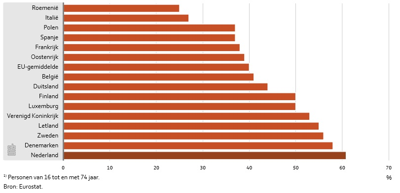
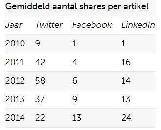

Social Media
Date:
Deze website gaat over de API’s van Social Media, voordat we het over deze specificatie gaan hebben wordt eerst het begrip Social Media besproken
In de afgelopen decennia is het ineternet een steeds belangrijkere rol gaan spelen in onze maatschappij. Het internet is een medium voor interactie geworden. Om te communiceren via het internet wordt er gebruik gemaakt van zogenoemde sociale media. Sociale media is de overkoepelende term voor online diensten en/of platformen waar de gebruikers de inhoud – user generated content – bepalen en verspreiden. Zo delen gebruikers informatie, ervaringen en kennis op basis van tekst, afbeeldingen, audio en video. Er is sprake van interactie tussen de gebruikers van de sociale media.
Vooral in Nederland is het gebruik van sociale media erg groot. Ongeveer zeven op de tien Nederlandse internetgebruikers van 12 jaar en ouder maakten in 2012 gebruik van sociale media, hierdoor behoort Nederland tot de Europese top van sociale-mediagebruik. [1]

Populaire Social Media
Er zijn vele soorten sociale media, waarvan sommige van veel bekendheid genieten, en andere van minder. De onbekende sociale media zijn niet zo interessant om op je website te verwerken aangezien toch bijna niemand een account voor dat sociale medium zal hebben. Om deze reden hebben wij op onze website de focus gelegd op twee van de grootste sociale media netwerken: Facebook en Twitter[2] (verder zijn er ook elementen van Youtube en Flickr te vinden).